Префектура Сайтама · Омия · искусство
Музей бонсай Омии: как смотреть на дерево в горшке и что в нём видеть
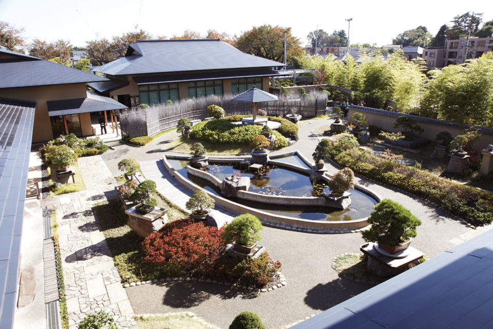
Бонсай многим кажется искусством для посвящённых. Но у любования деревом в горшке есть несколько простых правил, и стоит их узнать, как взгляд меняется. Основы объясняет Музей бонсай Омии в городе Сайтама.
Музей
Коллекция, которую любили промышленники и премьер-министры
Музей бонсай Омии собрал 113 лучших и выдающихся деревьев. Среди них айва китайская, которую первой внесли в список ценных бонсай. Эти деревья любили известные люди. Каитиро Нэдзу (1860–1940) был крупным промышленником и железнодорожным магнатом, а его собрание искусства легло в основу музея в Токио. Эйсаку Сато (1901–1975) возглавлял правительство Японии с 1964 по 1972 год и получил Нобелевскую премию мира.
Кроме самих деревьев в музее хранятся горшки, декоративные камни, гравюры укиё-э и много других вещей, связанных с бонсай. Музей стоит в деревне бонсай Омии, которую сам музей называет святым местом бонсай.
Ниже пять тем, с которыми бонсай перестаёт быть загадкой: породы деревьев, на что смотреть, формы, история и горшки с камнями. Рисунки сделаны под руководством специалистов музея.
Породы
Вечнозелёные и сезонные
Бонсай делят на две большие группы: «сёхаку» и «дзоки». С точки зрения ботаники сёхаку это голосеменные растения, а дзоки покрытосеменные, но строгих правил в этом делении нет.
Сёхаку: сосна и можжевельник
Сёхаку считают лицом бонсай. Это хвойные деревья, зелёные круглый год, и с древних времён самыми любимыми из них были сосна и китайский можжевельник синпаку. Слово «сёхаку» и составлено из названий этих двух деревьев. Такие бонсай очень живучи, а их корни и стволы принимают самые разные красивые формы. У этой группы долгая история: существует множество знаменитых деревьев, достойных звания национального сокровища, которые передаются из поколения в поколение.
Дзоки: деревья, которые меняются с сезоном
Если сёхаку красивы одинаково в любое время года, то дзоки меняются вместе с сезонами. Самые известные из них клёны момидзи и каэдэ. Внутри группы есть и своё деление: глициния или азалия сацуки относятся к «цветущим бонсай», которыми любуются ради цветов, а айва китайская к «плодовым», в которых интересно смотреть, как завязываются плоды.
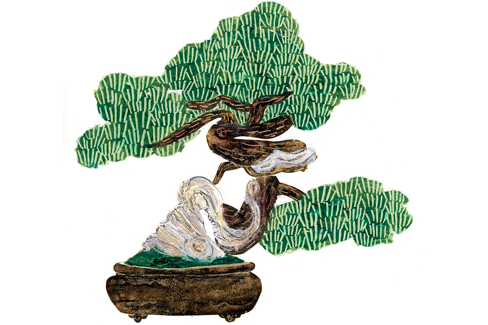
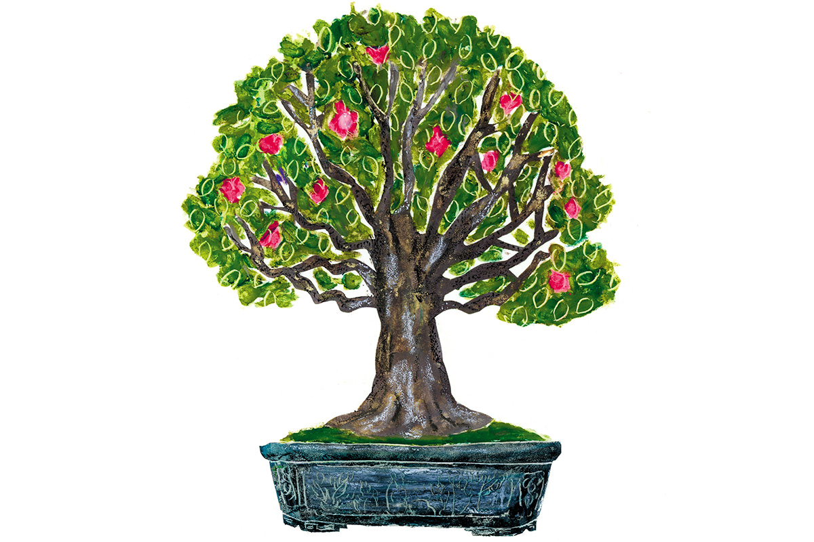
Взгляд
На что смотреть
Бонсай рассматривают целиком, но главное удовольствие в деталях. Суть любования в том, чтобы увидеть в маленьком горшке пейзаж дикой природы.
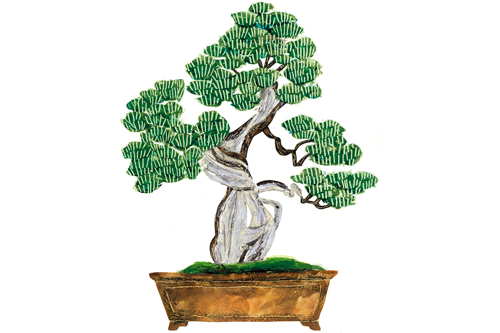
Дзин. Засохший кончик ветки, сухой от природы или высушенный рукой мастера. Белая древесина рядом с зелёной хвоей придаёт бонсай особый характер.
Сяри. Засохший участок ствола, который сохранил свою форму. Он тоже может появиться сам или быть сделан мастером. Сяри встречается у старых хвойных бонсай.
Татиагари. Часть ствола от корня до первой ветки. Красивым считается толстый и мощный ствол, как у большого дерева, с естественным изгибом и силой.
Эдабури. Ценится бонсай, у которого крупные ветви расположены в равновесии и нет ни одной лишней. Зимой, когда листья опадают, смотрят на тонко разветвлённые кончики ветвей.
Микихада. Кора у каждой породы своя. У сосен особенно ценят кору, которая за годы наросла множеством слоёв.
Нэбари. С этого и стоит начинать осмотр: как раскинулись корни. С годами они поднимаются над землёй и всё крепче держат почву.
Лицо и спина
У бонсай есть лицевая сторона и оборотная. Спереди хорошо виден ствол, а сзади его закрывают ветви, и смотреть труднее. При этом в Японии говорят: «У знаменитого дерева нет ни лица, ни спины». По-настоящему хороший бонсай красив с любой стороны, на все 360 градусов.
Формы
Шесть главных силуэтов
Форма бонсай повторяет облик дерева, которое в природе годами выдерживало ветер, снег и перемены вокруг. Мастер воспроизводит эти образы, и у каждой формы есть название в зависимости от числа стволов и их направления.
Тёккан. Один ствол растёт от корня прямо вверх. Это одна из основных форм бонсай. Корни должны расходиться во все стороны, ствол сужаться от основания к макушке, а ветви отходить поочерёдно вправо и влево.
Моёги. Ствол от основания поднимается плавными изгибами. Изгибы ствола и ветвей так и называют «узором», моё. Вместе с тёкканом это самая распространённая форма.
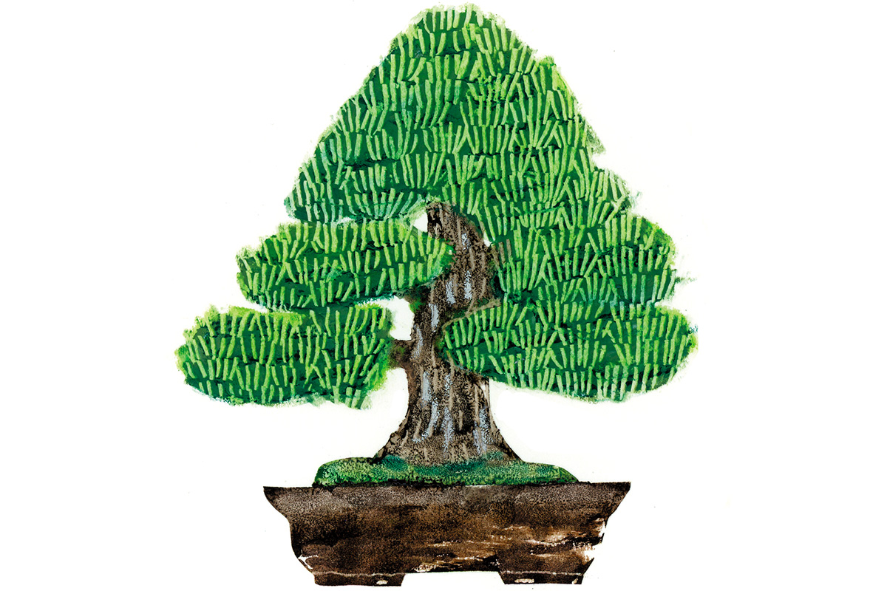
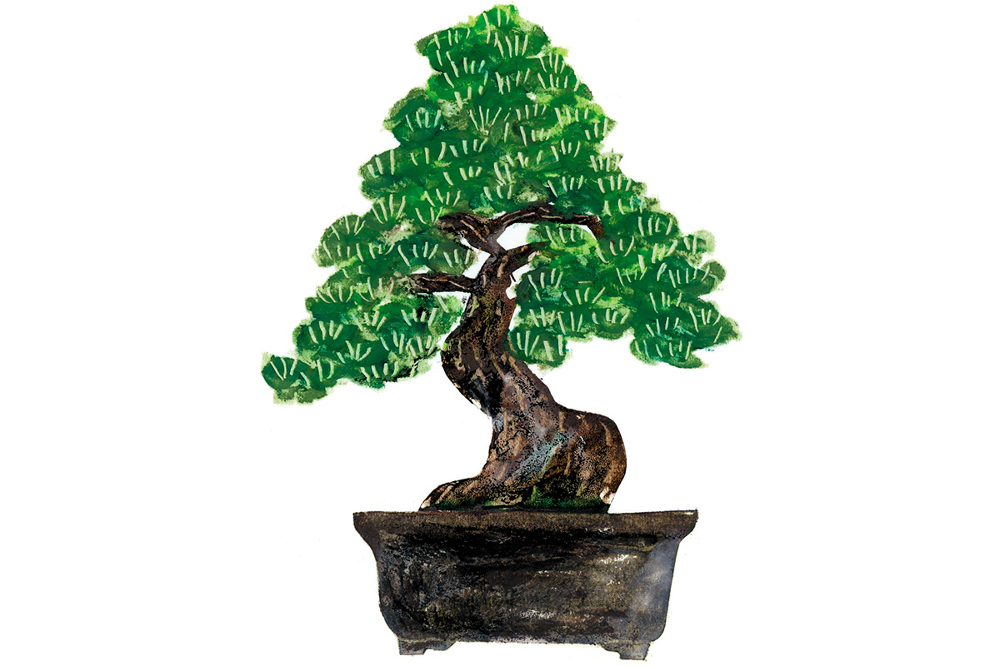
Кэнгай. Дерево свисает из горшка, как с отвесной скалы. Эта форма передаёт силу дерева, которое выживает в суровых условиях. Если ствол свисает немного, это хан-кэнгай, «полукаскад», а если круто вниз, это дай-кэнгай, «большой каскад».
Фукинагаси. Ствол наклонён, а дерево будто развевается на сильном ветру. Все ветви смотрят в одну сторону, и зритель словно чувствует этот ветер. Вместе с кэнгаем эта форма показывает дерево, которое стойко живёт среди суровой природы.
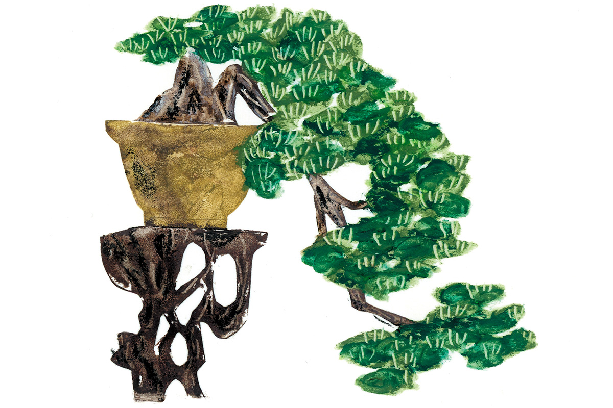
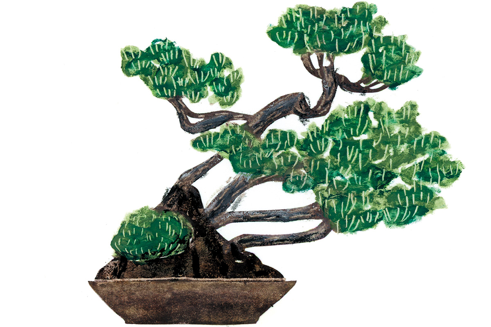
Ёсэуэ. В одном горшке растут несколько саженцев. Некоторые такие композиции пытаются передать целый лес, где деревья живут вместе.
Нэцуранари. На первый взгляд похоже на ёсэуэ, ведь стволов несколько. Но все они растут из одного корня и расходятся вправо и влево, будто деревья прижались друг к другу.
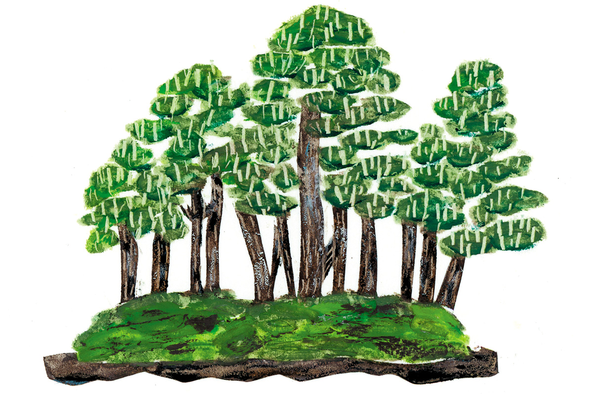
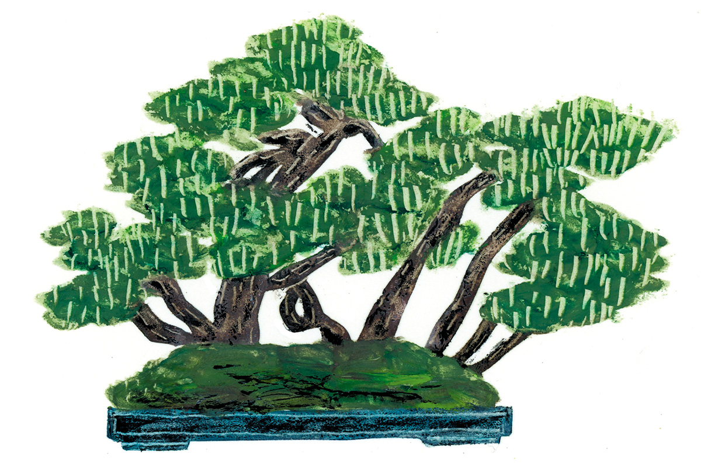
История
Из Китая через дворцы к простым горожанам
Само слово «бонсай» вошло в обиход неожиданно поздно, на стыке эпохи Эдо и эпохи Мэйдзи, то есть в середине и второй половине XIX века. А корни искусства лежат в Китае.
Предком японского бонсай считают «бонсан», миниатюрные пейзажи в чаше, которые появились в Китае около 1200 лет назад. В эпоху Хэйан (794–1185) бонсан попал в Японию и распространился среди аристократов и высших сословий. В эпоху Эдо (1603–1868) бонсай постепенно дошёл до простых горожан, и то, как люди любуются деревьями в горшках, запечатлено на гравюрах укиё-э того времени. В 1873 году бонсай показали на Всемирной выставке в Вене, и о нём узнал весь мир.
Горшок и камень
Без чего бонсай неполон
Бонсай красив не только деревом. Горшок, в котором оно растёт, и природный камень рядом с ним тоже важная часть композиции.
Горшок для бонсай в Китае называют «кабон», «цветочная чаша», а в Японии просто «хати». Вместе с плоскими чашами суйбан, на которых выставляют камни, их называют общим словом «бонки». Горшки бывают овальные и прямоугольные, покрытые селадоном или расписанные синим кобальтом, и у каждого свой характер.
Суйсэки это природный камень на подносе или в плоской чаше суйбан. В нём видят горный пейзаж с водой или любуются узором самого камня. Раньше такие камни называли «бонсэки» и ценили наравне с чайной церемонией и икэбаной. В новое время их стали всё чаще выставлять вместе с бонсай, и за ними закрепилось название «суйсэки».
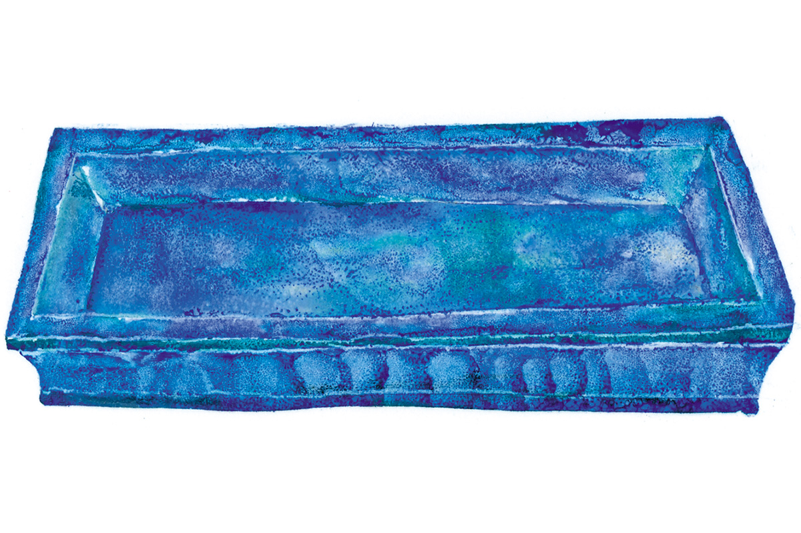
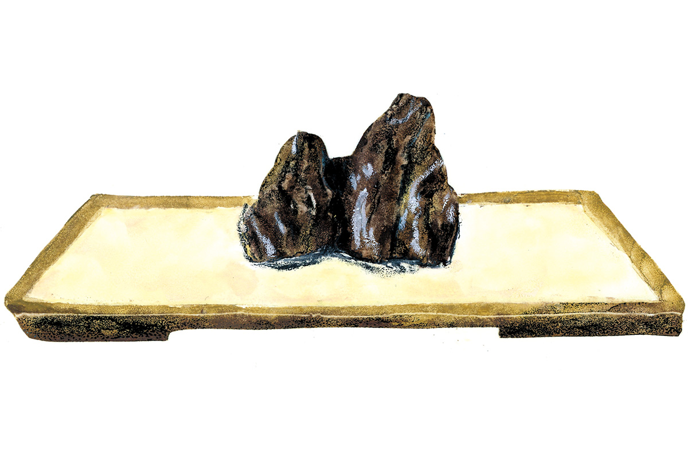
Вход в музей стоил 310 иен в 2020 году.
Музей бонсай Омии
- Адрес
- префектура Сайтама, Сайтама, район Кита, Торо-тё, 2-24-3
- Телефон
- +81 48-780-2091
- Часы работы
- 9:00–16:00, с марта по октябрь до 16:30
- Выходные
- четверг (если праздник, музей открыт), новогодние праздники, бывают внеплановые выходные
- Цены / Вход
- 310 иен
- Как добраться
- 5 минут пешком от восточного выхода станции Торо (линия JR Уцуномия), 10 минут пешком от станции Омия-коэн (линия Tobu Urban Park)
Фото: Аяко Кубо (иллюстрации).